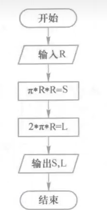

[TOC]
前文
Python是强类型的动态脚本语言，相比C、C++来说，它是一种解释型的高级编程语言，能更好跨平台运行，Python的优势在于它能以较短的篇幅完成一项任务，说人话就是敲代码敲得少不费手就能打出脚本，但劣势是运行相对C来说慢些，不过也无妨它成为脚本小子最爱，可以看看下方例子，你就知道差距了哈哈！！！
我一开始是先学C的，一开始接触编程很坐牢，if、else、for、do while等这些语句把我折磨得很惨，主要是零基础。。。。学完C后又到Python，因为不管打ctf还是以后工作，Python都是比较重要的，所以这也是我为什么要那么啰嗦的把我学Python的过程给记录下来，给未来的自己或者其它读者看看，交流一下也可。我参考嵩天的课本《Python语言程序基础》第二版来讲解，这也不算是讲解吧，更多是我学习的记录，你也看看我的过程，有错误的欢迎在邮箱或者评论区留言指正哈。
直观例子
C语言
|
|
Python
|
|
正文/语法
环境配置
Pycharm + Visual Studio Code
因为Web网页格式和md文件的问题，再md中的某些符号显示正常，而在博客页面上显示有些异常，但不妨碍阅读，如有显示错误，在不影响答案情况下，都当作正常范围。
Bug的由来
早期美国科学家霍波在调试设备时发现故障，有虫子在机器间飞过从而”卡“住机器运行，于是把程序性故障统称为Bug（飞虫），并把排除程序故障叫做Debug（调试），这也是我们如今计算机领域的专业行话。
快捷键
撤销：CTRL + z
复制：CTRL + C
粘贴：CTRL + v
查找：CTRL + f
剪切：CTRL + x
目录
第一章：程序设计基本方法
计算机的概述
计算机定义有多种，一般是指：计算机是根据指令操作数据的设备。
计算机的两个基本特性：功能性和可编程性。 功能性指对数据的操作，表现为数据计算、输出输入处理和结果存储等。 可编程性指它可以根据一系列指令自动地、可预测地、准确地完成操作者的意图。
程序设计语言
程序设计语言概述
程序设计语言是计算机能够理解和识别用户操作意图的一种交互体系，它按照特定规则组织计算机指令，使计算机能够自动进行各种运算处理。 简单地说就是我用机器的语言去告诉这个计算机我想干的，要这个计算机去完成，”交互“其实就类似交流互动的意思。
程序设计语言包括3个大类：机器语言、汇编语言和高级语言。 机器语言是一种二进制语言，它直接使用二进制代码表达指令，是计算机硬件可以直接识别和执行的程序设计语言。例如，执行数字2和3的加法，16位计算机上的机器指令为：11010010 00111011，不同计算机结构的机器指令不同。
直接使用机器语言编写程序十分繁冗，同时，二进制代码编写的程序难以阅读和修改，因此，汇编语言诞生了，它使用助记符与机器语言中的指令进行一一对应，在计算机发展早期能帮助程序员提高编程效率。例如，执行数字2和3的加法，汇编语言指令为：add 2, 3, result，运算结果写入 result。与机器语言类似，不同计算机结构的汇编指令不同。由于机器语言和汇编语言都直接操作计算机硬件并基于此设计，所以它们统称为 低级语言 。
高级语言与低级语言的区别在于，高级语言 是接近自然语言的一种计算机程序设计语言，例如python和C语言、Java、html之类，这些可以更容易地描述协算问题并利用计算机解决计算问题。例如，执行数字2和3加法，高级语言代码为：result=2+3，这个代码只与编程语言有关，与计算机结构无关，同一种编程语言在不同计算机上的表达方式是一致的。
编程语言分为两类：通用编程语言、专用编程语言 一般来说，通用编程语言比专用于某些领域的编程语言生命力更强。如HTML语言则是一个专用编程语言，应用在网络前端。它利用超链接将文本、图像、音/视频等资源组织起来形成 Web页面。像python就是通用型的了，能应用在多领域。
如果能像科幻电影中的情节一样，用人类语言驱动计算机将是最完美的事情。
遗憾的是，尽管许多一流科学家为此做过很多努力，仍然无法在可预见的未来设计出能完全理解人类语言的计算机。
编译与解释
高级语言按照计算机执行方式的不同可分成两类：静态语言和脚本语言。这里所说的执行方式是指计算机执行一个程序的过程，静态语言采用编译执行，脚本语言采用解释执行。无论哪种执行方式，用户的使用方法可以是一致的，如通过鼠标双击执行一个程序。
编译是将源代码转换成目标代码的过程，通常，源代码是高级语言代码，目标代码是机器语言代码，执行编译的计算机程序称为编译器（Compiler)。如图1.1展示了程序的编译过程，其中，虚线表示目标代码被计算机运行。编译器将源代码转换成目标代码，计算机可以立即或稍后运行这个目标代码。

解释是将源代码逐条转换成目标代码同时逐条运行目标代码的过程。执行解释的计算机程序称为解释器（Interpreter)。如图1.2展示了程序的解释过程。其中，高级语言源代码与数据一同输入给解释器，然后输出运行结果。

解释和编译的区别在于编译是一次性地翻译，一旦程序被编译，不再需要编译程序或者源代码。解释则在每次程序运行时都需要解释器和源代码。这两者的区别类似于外语资料的翻译和实时的同声传译。
编译过程只进行一次，所以，编译过程的速度并不是关键，目标代码的运行速度是关键。因此，编译器一般都集成尽可能多的优化技术，使生成的目标代码具备更好的执行效率。然而，解释器却不能集成太多优化技术，因为代码优化技术会消耗运行事件，使整个程序的执行速度收到影响。
采用编译方式有如下好处：
（1）对于相同源代码，编译所产生的目标代码执行速度更快。
（2）目标代码不需要编译器就可以运行，在同类型操作系统上使用灵活。
采用解释方式有如下好处：
（1）解释执行需要保留源代码，程序纠错和维护十分方便。在
（2）只要存在解释器，源代码可以在任何操作系统上运行，可移植性好。
Python语言概述
Python语言的发展
Python语言诞生于 1990年，由Guido van Rossum 设计并领导开发。1989年12月，Guido考虑启动一个开发项目以打发圣诞节前后的时间，所以决定为当时正在构思的一个新的脚本语言写一个解释器，因此在次年诞生了Python 语言。该语言以“Python”命名源于Guido对当时一部英剧“Monty Python’s Flying Circus”的极大兴趣。也许 Python 语言的诞生是个偶然事件，但20多年持续不断的发展将这个偶然事件变成了计算机技术发爆过程中的一件大事。
Python语言是开源项目的优秀代表，其解释器的全部代码都是开源的，可以在Python语言的主网站(https://www.python.org/)自由下载。
“Python 2.x 已经是遗产，Python 3.x 是这个语言的现在和未来”
编写Hello程序
结构简单很多，比C简单：
|
|
Python语言的Hello程序似乎与人类语言类似，即通过一行语句就完成了输出一段文本的任务。其它编程语言的Hello程序并不这样简洁，如下是C语言的Hello程序，对比。
|
|
C语言程序除了向屏幕输出“Hello World”的printf语句外，还包含了include、int、main、printf、return等其他辅助元素，这里就不具体介绍了。这个最小的例子只是一个缩影，Python 的简洁性在编程语言领域是公认的。同样功能的程序，Python语言实现的代码行数仅相当于C语言的1/10～1/5(其简洁程度取决于程序的复杂度和规模)。更少的代码行数、更简洁的表达方式将带来更少的程序错误、更快的程序开发速度和更好的可读性。这也是为什么很多CTF及其他行业的自动化脚本都是用Python来编写的重要原因之一。
Python语言的特点
这里不按照书上那样的繁琐，我简洁说明：
（1）语法简洁
（2）与平台无关：作为脚本语言，Python 程序可以在任何安装解释器的计算机环境中执行，因此，用该语言编写的程序可以不经修改地实现跨平台运行。
（3）粘性扩展：Python 语言具有优异的扩展性，体现在它可以集成C、C++、Java 等语言编写的代码，通过接口和函数库等方式将它们“粘起来”（整合在一起)。此外，Python 语言本身提供了良好的语法和执行扩展接口，能够整合各类程序代码。
（4）开源理念
（5）通用灵活
Python语言开发环境配置
安装Python解释器
略，这里我不写的原因是Pycharm、vscode等的编程软件更新迭代较快，时间有限，来不及更改，而且这类安装教程这一块可以去BiliBili、CSDN去找教程，都很详细的。
运行程序
运行Python 程序有两种方式：交互式和文件式。交互式指 Python 解释器即时响应用户输入的每条代码，给出输出结果。文件式，也称为批量式，指用户将Python程序写在一个或多个文件中，然后启动Python解释器批量执行文件中的代码。
交互式一般用于调试少量代码，文件式则是最常用的编程方式。 其他编程语言通常只有文件式执行方式。
下面以 Windows操作系统中运行 Hello程序为例具体说明两种方式的启动和执行方法。 1，交互式启动和运行方法
交互式有两种启动和运行方法。 第一种方法，启动Windows操作系统命令行工具（<Windows系统安装目录>\system32\cmd.exe)，在控制台中输入“Python"，在命令提示符»>后输入如下程序代码：
|
|
1、交互式：多行代码难以运行


2、文件式：多代码运行

运行Python程序
这里开始逐渐上强度了，我是先敲一敲Python代码，去运行一下，熟悉下它的逻辑原理，
1、圆面积的计算：
|
|
1963.4375000000002
|
|
1963.44
2、简单人名对话：
|
|
输入姓名：MISC
|
|
MISC大佬，学好CTF，前途无量！
|
|
MISC大侠，学好CTF，大展拳脚！
|
|
MISC哥哥，学好CTF，人见人爱！
3、斐波那契数列的计算：根据斐波那契数列的定义，输出不大于1000的序列元素。交互式执行过程。
|
|
4、同切圆的绘制
|
|
如下：

”Python的魅力远不只如此“
5、日期和时间的输出。 输出当前计算机的系统日期和时间。
|
|
程序基本编写
IPO（Input, Process, Output)
输入（Input）是一个程序的开始。程序要处理的数据有多种来源，因此形成了多种输入方式，包括文件输入、网络输入、控制台输入、交互界面输入、随机数据输入、内部参数输入等。
（1）文件输入：将文件作为程序输入来源。在获得文件控制权后，需要根据文件格式解析内部具体数据。例如，统计Excel文件数据的数量，需要首先获得Excel文件的控制权，打开文件后根据 Excel 中数据存储方式获得所需处理的数据，进而开展计算。7.1 节将具体介绍文件的使用。
（2）网络输入：将互联网上的数据作为输入来源。使用网络数据需要明确网络协议和特定的网络接口。例如，捕获并处理互联网上的数据，需要使用协议 HTTP并解析 HTML 格式。第10章将介绍网络爬虫的原理和方法。
（3）控制台输入：将程序使用者输入的信息作为输入来源。当程序与用户间存在交互时，程序需要有明确的用户提示，辅助用户正确输入数据。从程序语法来说，这种提示不是必需的，但良好的提示设计有助于提高用户体验。（比较常用）
（4）交互界面输入：通过提供一个图形交互界面从用户处获得输入来源。此时，鼠标移动或单|双击操作、文本框内的键盘操作等都为程序提供输入的方式。
（5）随机数据输入：将随机数作为程序输入，这需要使用特定的随机数生成器程序或调用相关函数。4.5 节将详细介绍产生随机数的方法。
（6）内部参数输入：以程序内部定义的初始化变量为输入，尽管程序看似没有从外部获得输入，但程序执行之前的初始化过程为程序赋予了执行所需的数据。
输出(Output)是程序展示运算成果的方式。程序的输出方式包括控制台输出、图形输出、文件输出、网络输出、操作系统内部变量输出等。 （（1）（2）（3）比较常用）
（1）控制台输出：以计算机屏幕为输出目标，通过程序运行环境中的命令行打印输出结果。这里“控制台”可以理解为启动程序的环境，例如，Windows中的命令行工具、IDLE工具等。
（2）图形输出：在计算机中启动独立的图形输出窗口，根据指令绘制运算结果。
（3）文件输出：以生成新的文件或修改已有文件方式输出运行结果，这是程序常用的输出方式。
（4）网络输出：以访问网络接口方式输出数据。第10章将介绍自动向搜索引擎提交关键词查询的实例。
（5）操作系统内部变量输出：指程序将运行结果输出到系统内部变量中，这类变量包括管道、线程、信号量等。
处理（Process）是程序对输入数据进行计算产生输出结果的过程。计算问题的处理方法统称为“算法”，它是程序最重要的组成部分。可以说，算法是一个程序的灵魂。算法处理比较重要，在章节后续单独讲解。
Python语言的迭代
版本区别
为什么Python 2”过时“了还要有人去学？在我网安学习期间，用到Kali Linux系统虚拟机，配置一些命令行工具时，有些经典脚本都是基于python2开发的 ，所以只能再给kali配置个python2和3的虚拟环境，才能用，在如今有些企业的系统产品有些也是基于python2开发的，在打补丁和维护升级时也需要用到python2，所以得对python2.x 基本了解，熟悉python3.x 。
“Python 2.x已经是遗产，Python 3.x是这个语言的现在和未来。”
2010年，Python 2.x系列发布了最后一个版本，其主版本号为2.7，同时，Python维护者们声称不在2.x系列中继续进行主版本号升级。Python 2.x系列已经完成了它的使命，逐步退出历史舞台。
2008年，Python 3.x第一个主版本发布，其主版本号为3.0，并作为Python语言持续维护的主要系列。该系列在2012年推出3.3 版本,2014年推出3.4版本，2015年推出3.5 版本，2016年推出3.6 版本。目前，主要的Python 标准库更新只针对 3.x系列。
Python 3.x 是 Python 语言的一次重大升级，它不完全向下兼容2.x系列程序。在语法层面，3.x系列继承了2.x系列绝大多数的语法表达，只是移除了部分混淆的表达方式。对于程序设计初学者来说，两者的差距很小，学会3.x系列也能看懂2.x。
（1）修改编码：3.x系列默认采用UTF-8编码，因此处理中文与英文一样方便。 而且，在表达UTF-8编码字符串时，不需要在前面增加u或者U。 （2）修改print 语句：用print)函数替换了 print 语句，两者功能一样，格式不同：
|
|
（3）修改exec语句:用exec()函数替换了 exec 语句，两者功能一样，格式不同。
（4）去掉一符号：用!=表示“不等于”。
（5）修改比较行为：用<、<=、>=、>符号比较两个元素时，如果元素之间不存在有意义的顺序关系，将抛出TypeError错误，不再返回 False。
第二章：Python程序实例解析
Python语法规则
Python格式框架
Python语言采用严格的“缩进”来表明程序的格式框架，在符号“ ： ”下一行就需要缩进了，缩进用处是决定代码块的从属关系，说人话就是，比如if语句下一行开始，缩进相同的代码都是属于if旗下的，这好处是更加简洁。当然过C语言也知道。


注释用语
注释用词是#、‘’‘、“”“ ”“”。
|
|
命名与保留字
与数学概念类似，Python 程序采用“变量”来保存和表示具体的数据值。为了更好地使用变量等其他程序元素，需要给它们关联一个标识符（名字)，关联标识符的过程称为命名。命名用于保证程序元素的唯一性。例如，实例代码 1.1中，TempStr是一个接收输入字符串的变量名字。 Python 语言允许采用大写字母、小写字母、数字、下画线 和汉字等字符及其组合给变量命名，但名字的首字符不能是数字，中间不能出现空格，长度没有限制。以下是合法命名的标识符：
python_is_good、python_is_not_good、is_it_a_question、1AG
除此之外，命名还不能和Python自带的专用词重名：

字符串
字符串是字符的序列，可以按照单个字符或字符片段进行索引。字符串包括两号体系：正向递增序号和反向递减序号，如图所示。如果字符串长度为L，递增以最左侧字符序号为0,向右依次递增，最右侧字符序号为L-1；反向递减以最右侧字符序号为-1，向左依次递减，最左侧字符序号为-L。这两种索引字方法可以同时使用。实例代码1.1 中第3行 TempStr[-1]表示字符串TempStr变最后一个字符。


a[0:3]就表示从第0个到第3个的前一个也就是0、1、2，所以没有”h“。

赋值语句
学过C语言就直接秒过懂了。
单一赋值：
|
|
同步赋值、一一对应：
|
|
input() 函数
也是很简单，类似C语言的scanf语句之类的，不同于C语言，这个input函数还有类似C的printf语句和scanf的作用，输出的同时还有输入作用。类比起来如下：
|
|
|
|
说人话就是一个python的input能同时等效C语言的printf和scanf。
分支语句
if、elif、else这个字面意思翻译就好：
if <条件1>
<语句1>
elif <条件2>
<语句2>
……..N……
else:
<语句块N>
理解来说，先从条件一开始判断，如果不满足第一个条件if，就跳到下一个条件elif上，不满足再接着下一个，直到最后一个条件else为止。当然编代码时，只有两个条件时只保留if和else。
print() 函数
print很像我们当今的用词“Say”，说话，输入你要说的，计算机就帮你说出来，print(<字符串>)在里面就是要说的，可以是字符串、数字等去输出变量。当输出变量值时，需要采用格式化输出方式，这需通过format()方法将待输出变量整理成期望输出的格式，（.format(F) 表示用变量 F 的值来替换前面的占位符）如：
|
|
转换之后的温度是10.00C 转换之后的温度是10.240C
eval() 函数
eval函数很类似print，但不单纯是print的输出作用，，它能够以Python表达式的方式解析并执行字符串，并将返回结果，再由print去输出最终结果。例如：
|
|
2
|
|
无输出结果
当然，eval还能这样用：
|
|
。。。。。。
循环语句
顾名思义就是在满足条件下去循环运行：
while (<条件>): <语句块1> <语句2>
当条件为真（true）时，执行语句块1语句，这些语句通过缩进表达与while语句的所属关系。当条件为假（false），退出循环，执行循环后语句块2语句，以此类推。
以下实例使用了条件循环，该循环条件用于判断用户输入的最后一个字符（TempStr[-1]）是否为’N‘或’n‘。
|
|
如果该字符是’N’或者’n’，则条件语句结果为false，退出循环，进而结束程序；否则条件语句结果为true，继续执行循环内部语句。这行语句中的not是保留字，表示对判断结果取反。后续章节对循环语句详细讨论。
for i in range(<循环次数>):
<语句块1>
Python模块-库的引用
先放预告片。。。

|
|
可以先运行下这代码。接下来都将围绕这段代码的各个函数进行拆解分析。
库的引用
何为“库”？就是仓库的意思，没想到吧？Python语言还有仓库？就是解决更多问题的工具库，比如说math库、turtle库等，看字面意思就知道，math肯定和数学有关的，事实上确实如此。如果你在编Python语言时，想绘制sin函数的平面坐标图，直接写sin就发现Python它压根不认识这东西，这时你就需要引用math库去找里面你要的“工具”，表示出sin函数的编码，然后再引用turtle库去画图，两者一结合，熟悉的sin波浪线图就出来啦！！
我们可以用import来引用库，如
|
|
当然也可以用from <库名> import <函数名，函数名，……..，函数名> 以及from <库名> import *（*表示通配符，把库所有函数都调用），如果全部调用的话，那就直接写对应函数就好，不用写math.xxx，而是直接写xxx函数

有关库的章节讨论放在后续。
turtle库语法的引用
turtle（海龟）是一个直观有趣的的图形绘制函数库，所以说turtle比较重要，单独细讲。在这里我仅举几例：
绘图坐标体系
turtle库绘制有一个基本的结构框架：一个小乌龟在坐标系中爬行，其爬行轨迹形状形成了绘制图形。对于小海龟来说，有”前进“、”后退“、”旋转“等爬行行为，跟游戏一样有一个前、后、左、右方向键，刚开始时小海龟在原点（0，0），行进方向为水平右方。

width：窗口宽度，如果值是整数，表示像素值：如果值是小数，表示窗口宽度与屏幕的比例。
height：窗口高度，如果值是整数，表示像素值；如果值是小数，表示窗口高度与屏幕的比例。
startx：窗口左侧与屏幕左侧的像素距离，如果值是 None，窗口位于屏幕水平中央。
starty：窗口顶部与屏幕顶部的像素距离，如果值是 None，窗口位于屏幕垂直中央。
上图的预告片代码中就有这个setup函数，可以看到已经设定好窗口大小参数的。
画笔控制函数
turtle.penup ()和 turtle.pendown ()函数，顾名思义，这俩家伙就是“笔”，上图的预告片的代码就有这俩函数。（这俩函数还有简称，分别是turtle.up和turtle.down或者turtle.pu和turtle.pd，在此了解下就好，还是全名可读性强些）
penup函数和pendown函数按照字面意思易知，它们分别表示抬起画笔和落下画笔:
penup函数会抬起画笔后，这时程序再让画笔移动是绘制不出形状的，需要pendown落下画笔才可绘制，毕竟penup相当于在空中抬笔这时候画画又能画出啥呢？
turtle.pensize() 函数，别名：turtle.width()，就是控制画笔的粗度，例如pensize(25)表示25宽度的笔。
pensize函数的变量（）为无/none的话，则函数返回当前画笔的宽度。
turtle.pencolor() 函数给画笔设置颜色，可以看看预告片的编码画出一条紫色小蛇，括号里可以是表示颜色的字符串，例如，”purple、blue“等；也可以是颜色对应的RGB数值，例如，（51, 204, 140）。
| 英文名称 | RGB | 十六进制 | 中文名称 |
|---|---|---|---|
| white | 255 255 255 | #FFFFFF | 白色 |
| black | 0 0 0 | #000000 | 黑色 |
| grey | 190 190 190 | #BEBEBE | 灰色 |
| darkgreen | 0 100 0 | #006400 | 深绿色 |
| gold | 255 215 0 | #FFD700 | 金色 |
| violet | 238 130 238 | #EE82EE | 紫罗兰色 |
| purple | 160 32 240 | #A020F0 | 紫色 |
RGB颜色是计算机系统最常用的颜色体系之一，它采用R(红色）、G(绿色）、B（蓝色）3种基本颜色及它们的叠加组成各式各样的颜色，构成颜色体系。RGB颜色诞生于19 世纪中期、计算机产生之前，理论表明，RGB颜色能够形成人眼感知的所有颜色。 具体来说，RGB颜色采用（r,g,b）表示，其中，每个颜色采用8bit表示，取值范围是[0, 255]。因此，RGB颜色一共可以表示256（16 M，约1678万）。
形状绘制函数
turtle.fd() 函数，全名turtle.forward() 函数，通过一组函数控制画笔的行进动作，进而绘制出形状。turtle.fd(distance) 表示向小海龟当前行进方向前进distance单位距离，值为负数就反方向走。
turtle.seth() 函数，别名turtle.setheading (to_angle)，设置小海龟当前的行进方向，该角度为绝对方向的角度值。
to_angle：角度的整数值。

for循环语句和turtle.circle() 函数
|
|
turtle.circle(radius, extent=None)
作用：根据半径radius绘制extent角度的弧形。

radius：弧形半径，当值为正数时，半径在小海龟左侧，当值为负数，半径在小海龟右侧。
extent：绘制弧形的弧度，当不设置弧度时默认”None“。
以上就是个别例子，还有很多turtle 库函数的详细用法最好都了解下，因为比较基础，养成引用库的好习惯。
第三章：Python语言的常规应用
数字类型
表示数字或数值的数据类型称为数字类型，Python语言提供3种数字类型：整数、浮点数和复数，分别对应数学中的整数、实数和复数。
注意：1010表示一个整数，‘’1010”表示一个字符串。
数字类型的正确运用能提高数字运算效率，同时具备较少的存储空间代价。整数和带有小数的数字分别由计算机中央处理器中不同的硬件逻辑操作，对于相同类型操作，如整数加法和小数加法，前者比后者的速度一般快5~20倍。
整数类型
整数类型与数学中整数的概念一致，下面是整数类型的例子： 1010.99，-217，0x9a，-0×898
整数类型共有4种进制表示：十进制、二进制、八进制和十六进制。默认情况，整数采用十进制，其他进制需要增加引导符号，如表3.1所示。二进制数以0b 引导，八进制数以0o引导，十六进制数以0x引导，大小写字母均可使用。
| 进制种类 | 引导符号 | 描述 |
|---|---|---|
| 十进制 | 无 | 默认情况,例如,1010.-425 |
| 二进制 | 0b或0B | 由字符0和1组成，例如，0b101,0B101 |
| 八进制 | 0o或0O | 由字符0到7组成，例如00711,00711 |
| 十六进制 | ox或0X | 由字符0到9、a到f、A到F组成，例如，OxABC |
整数类型理论上取值正负无穷，但现实是受运行Python程序的计算机内存大小。
浮点数类型
浮点数类型与数学中实数的概念一致，表示带有小数的数值。Python语言要求所有浮点数必须带有小数部分，小数部分可以是 0，这种设计可以区分浮点数和整数类型。浮点数有两种表示方法：十进制表示和科学计数法表示。下面是浮点数类型的例子：0.0、-77. 、-2.17、3.1416、96e4、4.3e-3、9.6E5。当然，4.3e-3值为0.004.3、9.6E5也可以表示为9.6E+5。
科学计数法使用字母e或E作为幂的符号，以10为基数，含义如下：
$$ aeb = a*10^b $$Python 浮点数的数值范围和小数精度受不同计算机系统的限制，sys.float_info详细列出了Python 解释器所运行系统的浮点数各项参数，例如：
|
|
sys.float_info (max=1.7976931348623157e+308, max_exp=1024, max_10_exp=308, min=2.2250738585072014e-308, min _exp=-1021, min_10_exp=-307, dig=15, mant_dig=53, epsilon=2.220446049250313e-16, radix=2, rounds=1)
1.7976931348623157e+308
关于浮点数的精度问题
浮点数在超过15位数字计算中产生的误差与计算机内部采用二进制运算有关，使用浮点数无法进行极高精度的数学运算。
由于Python语言能够支持无限制且准确的整数计算，因此，如果希望获得精度更高的计算结果，往往采用整数而不直接采用浮点数。例如，计算如下两个数的乘法值，它们的长度只有10个数字，其中：
a=3.141592653， b=1.2345678
|
|
3.8785094379864535
3878509437986453394
到此为止，你可以很清楚看到确实有误差，一切归根到底是计算机内部底层基础的差异造成的，毕竟计算到15位小数相同，这个误差已经很小了，这个精度在现实生活中已能够应对绝大多数的计算研究了。
复数类型
复数类型表示数学中的复数。这个大家应该都很熟悉：
$$ x^2=-1 $$复数可以看作是二元有序实数对(a,b)，表示为a+i，其中，a是实数部分，简称实部，b是虚数部分，简称虚部。根据图3.1，复数是实数在二维平面空间旋转的一和麦示。

Python语言中，复数的虚数部分通过后缀“i”或“j”来表示，例如：12.3+4j、-5.6+7j、1.23e-4+5.67e+89j
复数类型中实数部分和虚数部分的数值都是浮点类型。对于复数z,可以用z.real和z.imag 分别获得它的实数部分和虚数部分，例如：
|
|
0.000123
5.67e+89
复数类型在科学计算中十分常见，基于复数的运算属于数学的复变函数分支，该分支有效支撑了众多科学和工程问题的数学表示和求解。Python 直接支持复数类型，为这类运算求解提供了便利。
Bool类型（补充）
Bool数类型只有True、False这两种，在Python中Bool比较特殊，在这里需要着重了解下特性就好，在Python或者C中，True或者False很大程度上用来作判断条件语句的一部分的，学过C语言的都知道：true和false分别可用1、0表示，也可以说是等价关系。那类比到Python中则是一样的，但特性在于：
|
|
11
对于False也是一样，这里不详细讲解，只要知道有这个特性就好，毕竟Bool类型是归类到整数类型之下的。
数字类型的操作
内置的数值运算操作符
Python提供了9个基本的数值运算操作符，如下所示。这些操作符由Python解释器直接提供，不需要引用标准或第三方函数库，也叫做内置操作符。
| 操作符 | 描述 |
|---|---|
| || | “或”的意思，比如a = 3 |
| x + y | x与y之和 |
| x - y | x与y之差 |
| x * y | x与y之积 |
| x / y | x与y之商 |
| x // y | x与y之整数商，即不大于×与y之商的最大整数 |
| x % y | x与y之商的余数。也称为模运算 |
| -x | x的负值即x*(-1） |
| && | ”和“的意思，比如a = 3&&b = 2，意思是a=3的同时b还要为2 |
| x**y | x的y次幂，即x的y次方 |
这些操作符几乎与数学习惯一致，运算结果也符合数学意义。操作符运算的结果可能改变数字类型，3种数字类型之间存在一种逐渐扩展的关系，具体如下：
整数->浮点数>复数
这是因为整数可以看成是浮点数没有小数的情况，浮点数可以看成是复数虚部为0的情况。基于上述扩展关系，数字类型之间相互运算所生成的结果是“更宽”的类型，基本规则如下。
（1）整数之间运算，如果数学意义上的结果是小数，结果是浮点数。
（2）整数之间运算，如果数学意义上的结果是整数，结果是整数。
（3）整数和浮点数混合运算，输出结果是浮点数。
（4）整数或浮点数与复数运算，输出结果是复数。
如下例子所示：
|
|
33.333333333333336
33
127.0
(9+2j)
Bool运算符（补充）
Bool运算符：&（按位与运算）
Bool的运算符&和上面所讲的&&有区别，但在实际编程中很容出错，需要多加小心
|
|
4
这么计算的？很奇怪，让我来给你解释： 它们进行的是”按位与’运算。按位与运算的规则是：对两个数字的二进制每一位分别进行运算，只有当对应位都为 1 时，结果位才为 1，否则为 0。
|
|
得出最终结果等于100，再进行十进制转换得出为4。
Bool运算符：|（按位或运算）
这个就比较霸道了e///
4–>100 #4的二进制是100 5–>101 #5的二进制是101
4–>100 #4的二进制是100 5–>101 #5的二进制是101
|
|
7
它们进行的是”按位或’运算。按位或运算的规则是：对两个数字的二进制每一位分别进行运算，当对应位出现 1 时，结果位必为 1，否则为 0。
|
|
得出最终结果等于111，再进行十进制转换得出为7。
内置的数值运算函数
| 函数 | 描述 |
|---|---|
| abs(x) | x的绝对值 |
| divmod(x,y) | (x//y,x%y)，输出为二元组形式（也称为元组类型） |
| pow(x,y[,z]) | (x**y)%z,[.]表示该参数可以省略。即pow(x,y)，它与 |
| round(x[,ndigits]) | 对x四舍五入，保留ndigits位小数。round(x)返回四舍五入的整数值 |
| max(X1,X2,……,Xn) | X1,X2,….,Xn的最大值，n没有限定 |
| min(X1,X2……,Xn) | X1,X2,….,Xn的最小值，n没有限定 |
内置的数字类型转换函数
数值运算操作符可以隐式地转换输出结果的数字类型，例如，两个整数采用运算符”的除法将可能输出浮点数结果。此外，通过内置的数字类型转换函数可以显式地在数字类型之间进行转换，如表3.4所示。 浮点数类型转换为整数类型时，小数部分会被舍弃（不使用四舍五入)，复数不能直接转换为其他数字类型，可以通过.real和.imag将复数的实部或虚部分别转换，例如：
| 函数 | 描述 |
|---|---|
| int(x) | 将x转换为整数，x可以是浮点数或字符串 |
| float(x) | 将x转换为浮点数，x可以是整数或字符串 |
| complex(re[,im]) | 生成一个复数，实部为re，虚部为im，re 可以是整数、浮点数或字符串，im可以是整数或浮点数但不能为字符串 |
|
|
输出结果分别是：
10
(10.99 + 0j)
报错TypeError
99.0
Math库的使用
Math概述
继前章的turtle使用，目前还对库引用比较生疏，而且刚了解到数学运算符，对它也相对陌生，正好利用这个案例把这两部分巩固一下。又能学库的引用还能认识更多的数学函数在Python的样子，岂不美哉？
Math 库是 Python 提供的内置数学类函数库，因为复数类型常用于科学计算，一般计算并不常用，因此math 库不支持复数类型，仅支持整数和浮点数运算。math库一共提供了4个数学常数和44个函数。44个函数共分为4类，包括16个数值表示函数、8个幂对数函数、16个三角对数函数和4个高等特殊函数。
大家可以去官网看看，太多函数了，描述很详细，链接在上面。
案例：天天向上的力量
|
|
向上：1.44，向下：0.69
字符串类型及其操作
字符串类型的表示
字符串是字符的序列表示，可由一对单双三引号构成。
单引号字符串：“单引号表示，可以使用"双引号"作为字符串的一部分'
双引号字符串：“双引号表示，可以使用’单引号’作为字符串的一部分”
三引号字符串：“三引号表示可以使用"双引号”
‘单引号’
也可以换行
’''
如下例子：
|
|
反斜杠字符（\）是一个特殊字符，在字符中表示转义，即该字符与后面相邻的一个字符共同组成了新的含义。如，\n表示换行、\t表示制表符（Tab）等等。
|
|
Python
语言 程序 设计
以下是Python的各种转义字符：
| 转义字符 | 描述 |
|---|---|
| \（在行尾时） | 续行符 |
| \\ | 反斜杠符号 |
| \' | 单引号 |
| \” | 双引号 |
| \a | 响铃 |
| \b | 退格（Backspace） |
| \e | 转义 |
| \000 | 空 |
| \n | 换行 |
| \v | 纵向制表符 |
| \t | 横向制表符 |
| \r | 回车 |
| \f | 换页 |
| \oyy | 八进制数yy代表的字符，如：\o12代表换行 |
| \xyy | 十进制数yy代表的字符，如：\x0a代表换行 |
| \other | 其它的字符以普通格式输出 |
这个\a很有意思啊，真会响铃啊，不过得在终端才会这样的，在其它编程软件可能不会这样的，你可以去试一试。

字符与切片
前章已经介绍，字符串包括两种序号体系：正向递增序号和反向递减序号s。
如果字符串长度为L,正向递增需要以最左侧字符序号为0,向右依次递增，最右侧字符序号为L-1：反向递减序号以最右侧字符序号为-1，向左依次递减，最左侧字符序号为-L。这两种索引字符的方法可以在一个表示中使用。司Python 字符串也提供区间访问方式，采用[N:M]格式，表示字符串中从N到M（不包含M）的子字符串，其中，N和M为字符串的索引序号，可以混合使用正向递增序号和反向递减序号。如果表示中M或者N索引缺失，则表示字符串把开始或结束索引值设为默认值。
字符串以Unicode编码存储，因此，字符串的英文字符和中文字符都算作1个字符。 观察下面实例：
|
|
以下为输出结果，一一对应：
‘P’
‘P 言 计’
thon语言
Python
语言程序设计
Python语言程序设计
字符串操作符
Python很厉害哈，数学1+1，我Python直接字符串相加：
基本的字符串操作符
| 操作符 | 描述 |
|---|---|
| x + y | 连接两个字符串x与y |
| x * n或n * x | 复制n次字符串x |
| x in s | 如果x是s的子串，返回True，否则返回False索引 |
| str[i] | 返回第i个字符 |
| str[N:M] | 切片，返回索引第N到第M的字符串，其中不包含M |
这里有个易错点，我先声明下，关于操作符x in s的使用：
|
|
True
但是：sd
|
|
False
为什么是错的？ad不都在fasd字符串当中吗？这可不是哦，因为ad这是一个字符串，fasd也是一个字符串，都是一个整体，连在一起的，fasd可没有连在一起的ad哦，只有分开的才有。要当心！
内置的字符串处理函数
Python解释器提供了一些内置函数。其中，有6个函数与字符串处理相关，如下表所示：
| 函数 | 描述 |
|---|---|
| len(x) | 返回字符串x的长度，也可返回其他组合数据类型元素个数 |
| str(x) | 返回任意类型x所对应的字符串形式 |
| chr(x) | 返回Unicode编码x对应的单字符 |
| ord(x) | 返回单字符表示的Unicode编码 |
| hex(x) | 返回整数×对应十六进制数的小写形式字符串 |
| oct(x) | 返回整数x对应八进制数的小写形式字符串 |
len(x)返回字符串x的长度，Python 3以Unicode 字符为计数基础，因此，字符串中英文字符和中文字符都是1个长度单位。
|
|
12
1
|
|
‘3.1415926’
每个字符在计算机中可以表示为一个数字，称为编码。字符串则以编码序列方式存储在计算机中。目前，计算机系统使用的一个重要编码是ASCI编码，该编码用数字0～127表示计算机键盘上的常见字符以及一些被称为控制代码的特殊值,例如，大写字母A～Z用65～90表示，小写字母a～z用97～122表示。
ASCII 编码针对英语字符设计，它没有覆盖其他语言存在的更广泛字符，因此，现代计算机系统正逐步支持一个更大的编码标准 Unicode，它支持几乎所有书写语言的字符。Python 字符串中每个字符都使用 Unicode编码表示。
chr这个函数就和unicode有关啦；
|
|
‘a’
|
|
‘0xff’
‘-0o377’
内置的字符串处理方法
在Python 解释器内部，所有数据类型都采用面向对象方式实现，封装为一个类。 字符串也是一个类，它具有类低《a》.《b》()形式的字符串处理函数。在面向对象中，这类函数被称为“方法”。字符串类型共包含43个内置方法。鉴于部分内置方法并不常用，限于篇幅，这里仅介绍其中16个常用方法，如下表所示：
| 方法 | 描述 |
|---|---|
| str.lower() | 返回字符串str的副本，全部字符小写 |
| str.upper() | 返回字符串str的副本，全部字符大写 |
| str.islower() | 当str所有字符都是小写时，返回True，否则返回 False |
| str.isprintable() | 当str所有字符都是可打印的,返回True,否则返回 False |
| str.isnumeric() | 当str所有字符都是数字时，返回True，否则返回 False |
| str.isspace()（少用） | 当str所有字符都是空格，返回True，否则返回 False |
| str.endswith(suffix[,start[,end]]) | str[start: end]以suffix结尾返回True，否则返回False |
| str.startwith(prefix[,start[,end]]) | str[start: end]以prefix开始返回 True，否则返回False |
| str.split(sep=None,maxsplit=-1) | 返回一个列表，由str根据 sep被分隔的部分构成 |
| str.count(sub[,start[,end]]) | 返回 str[start: end]中 sub子串出现的次数 |
| str.replace(old,new[,count]) | 返回字符串str的副本，所有old子串被替换为new，如果count给出，则前count次old出现被替换 |
| str.center(width[,fillchar]) | 字符串居中函数 |
| str.strip([chars]) | 返回字符串str的副本，在其左侧和右侧去掉chars中列出的字符 |
| str.zfill(width) | 返回字符串str的副本，长度为 width，不足部分在左侧添0 |
| str.format() | 返回字符串str的一种排版格式 |
| str.join(iterable) | 返回一个新字符串，由组合数据类型iterable变量的每个元素组成，元素间用str分隔 |
字符串类型的格式化
要点：字符串通过format()方法进行格式化处理。
为什么会有字符串类型的格式化问题呢？例如，一个程序希望输出如下内容： “2016-12-31：计算机PYTHON的 CPU占用率为10%。”
其中，下画线内容可能会变化，需要由特定函数运算结果进行填充，最终形成上述格式字符串作为输出结果。字符串格式化用于解决字符串和变量同时输出时的格式安排。
字符串是程序向控制台、网络、文件等介质输出运算结果的主要形式之一，为了能提供更好的可读性和灵活性，字符串类型的格式化是运用字符串类型的重要内容之一。Python 语言同时支持两种字符串格式化方法，一种类似C语言中printf()函数的格式化方法，支持该方法主要考虑与大批C语言程序员编程习惯相一致；另一种采用专门的 str.format()格式化方法。由于 Python中更为接近自然语言的复杂数据类型（如列表和字典等)无法通过类C的格式化方法很好表达，Python已经不在后续版本中改进C风格格式化方法。Python 语言将主要采用 format()方法进行字符串格式化。以下是关于format的讲解。
Format()方法的基本使用
字符串format()方法的使用格式：
<模板字符串>.format(<逗号分隔的参数>)
模板字符串由一系列槽组成，用来控制修改字符串中嵌入值出现的位置，槽用大括号{}表示，如果大括号里面没有序号的话，默认按当前自然顺序来排序。如下：
|
|
计算机Python的CPU占用率为10%。

format()方法可以非常方便地连接不同类型的变量或内容，如果需要输出大括号，采用{{表示，}表示}，例如：
|
|
圆周率是3.1415926…
当然，也可在大括号里面放序号进行排序：
|
|
圆周率(3.1415926…)是无理数
Format()方法的格式控制
format()方法中模板字符串的槽除了包括参数序号，还可以包括格式控制信息。 此时，槽的内部样式如下： {<参数序号>：<格式控制标记>}
其中，格式控制标记也用来控制参数显示时的格式：
| : | 引导符号 |
|---|---|
| <填充> | 用于填充单个字符 |
| <对齐> | <左对齐；>右对齐；^居中对齐 |
| <宽度> | 槽的设定输出宽度 |
| <,> | 数字的千位分隔符适用于整数和浮点数 |
| <.精度> | 浮点数小数部分的精度或字符串的最大输出长度 |
| <类型> | 整数类型b,c,d,o,x,X,浮点数类型e,E,f,% |
格式控制标记包括<填充>、<对齐>、<宽度>、<、>、<.精度>、<类型>6 个字段，这些字段都是可选的，可以组合使用，这里按照使用方式逐一介绍。
<宽度>、<对齐>和<填充>是 3个相关字段。<宽度>指当前槽的设定输出字符宽度，如果该槽对应的 format)参数长度比<宽度>设定值大，则使用参数实际长度； 如果该值的实际位数小于指定宽度，则位数将被默认以空格字符补充。<对齐>指参数在宽度内输出时的对齐方式，分别使用<、>和^ 3个符号表示左对齐、右对齐和居中对齐。<填充>指宽度内除了参数外的字符采用什么方式表示，默认采用空格，可以通过填充更换。例如：
|
|
格式控制标记中的逗号（,)用于显示数字类型的千位分隔符，例如：
|
|
<.精度>表示两个含义，由小数点(.)开头。对于浮点数，精度表示小数部分输出的有效位数。对于字符串，精度表示输出的最大长度。
|
|
<类型>表示输出整数和浮点数类型的格式规则。对于整数类型，输出格式包括以下6种：
（1）b：输出整数的二进制方式。
（2) c：输出整数对应的Unicode 字符。
（3）d：输出整数的十进制方式。
（4）o:输出整数的八进制方式。
（5）x:输出整数的小写十六进制方式。
（6）X：输出整数的大写十六进制方式。
|
|
110101001,Ʃ,425,651,1a9,1A9
对于浮点数类西输出格式包括以下4种。
（1）e：输出浮点数对应的小写字母e的指数形式。
（2）E：输出浮点数对应的大写字母E的指数形式。
（3）f：输出浮点数的标准浮点形式。
（4）%：输出浮点数的百分形式。
浮点数输出时尽量使用<.精度>表示小数部分的宽度，有助于更好控制输出格式。
|
|
3.140000e+00,3.140000E+00,3.140000,314.000000%
3.14e+00,3.14E+00,3.14,314.00%
字符串和字节流:
字节流是字节组成的序列，字节由固定的8个比特组成，因此，字节流从二进制角度有确定的长度和存储空间。Python字符串由编码字符的序列组成，字符 根据编码不同长度也不相同。因此，从存储空间角度，字符串和字节流不相同。
硬盘上所有文件都以字节形式存储，例如文本、图片及视频等，真正存储和传输数据时都是以字节为单位。字符值在内存中形成，由字节流经过编码处理后产生。
案例：文本进度条
进度条是计算机处理任务或执行软件中常用的增强用户体验的重要手段，它能够实时显示任务或软件的执行进度。本节将利用Python 字符串处理方法实现文本进度条功能。
最简单地，利用print)函数实现简单的非刷新文本进度条。基本思想是按照任务执行百分比将整个任务划分为100个单位，每执行 N%输出一次进度条。每一行输出包含进度百分比，代表已完成的部分（*）和未完成的部分（..）的两种字符，以及一个跟随完成度前进的小箭头，风格如下：
|
|
由于程序执行速度远超过人眼的视觉停留时间，直接进行字符输出几乎是瞬间完成，不利于观察。为了模拟任务处理的时间效果，调用Python标准时间库 time，使用 time.sleep(t)函数将当前程序暂时挂起ts,t可以是小数。由此可以接近真实的模拟进度条效果输出。使用import保留字调用 time库。
|
|
接下来我将运用上节所讲到的format()来举几个例子：
默认情况，print()函数在输出结尾处会自动产生一’\n’，即换行符，从而让光标自动移动到下一行行首，这样上一步输出依旧保存在界面上。
采用for循环和print()函数构成程序的主体部分，输出百分比最高（100%）为3位数据，为了使输出显得整齐，可以使用{:^3.0f}格式化百分比部分。这个简单的文本进度条代码如下。变量scale 表示输出进度条的精度，读者可以修改这个值去观察效果变化。
|
|
这个代码运行后就比较像那种加载界面的进度条了。。
具体还需要自己刷题来熟悉format()。
第四章：程序的控制结构
要点: 程序由3种基本结构组成：顺序结构、分支结构和循环结构。
程序的基本结构
程序流程图
程序流程图用一系列图形、流程线和文字说明描述程序的基本操作和控制流程，它是程序分析和过程描述的最基本方式。流程图的基本元素包括7种，如图所示。

学过C语言或者其它基础编程语言的对这方面比较熟悉。
其中，起止框表示一个程序的开始和结束；判断框判断一个条件是否成立，并根据判断结果选择不同的执行路径；处理框表示一组处理过程；输入/输出框表示数据输入或结果输出；注释框增加程序的解释；流向线以带箭头直线或曲线形式指示程序的执行路径；连接点将多个流程图连接到一起，常用于将一个较大流程图分隔为若干部分。下图所示为一个流程图示例，为了便于描述，采用连接点A将流程图分成两个部分。

像上面这张图，就很清晰，比你用代码去写思维导图就好很多，直接用图表示你的想法，再用图去转换回对应的函数、代码、语句，这是我们未来从事计算机行业很好的的交流手段之一，一定要善用这些技巧，学习交流才无阻！
程序的基本结构
目前为止，计算机程序可以看作是一条一条顺序执行的代码。顺序结构是程序的基础，但单一的顺序结构不可能解决所有问题，因此需要引入控制结构来更改程序的执行顺序以满足多样的功能需求。
程序由3种基本结构组成：顺序结构、分支结构和循环结构。这些基本结构都有一个入口和一个出口。任何程序都由这3种基本结构组合而成。为了直观展示程序结构，这里采用流程图方式描述。
顺序结构是程序按照线性顺序依次执行的一种运行方式，如图4.3所示，其中语句块1和语句块2表示一个或一组顺序执行的语句。
分支结构是程序根据条件判断结果而选择不同向前执行路径的一种运行方式，如图所示，根据分支路径上的完备性，分支结构包括单分支结构和二分支结构，二分支结构组合形成多分支结构。

循环结构是程序根据条件判断结果向后反复执行的一种运行方式，如图，根据循环体触发条件不同,循环结构包括条件循环和遍历循环结构。

实例
对于一个计算问题，可以用IPO、流程图或者直接以Python代码方式描述。我的建议是功能简单的问题建议直接编写Python代码，功能复杂的问题可以采用IPO 描述或流程图描述为手段。
我想说的是：“就像速刷高考数学题一样，简单题咱们完全拿下，全部计算过程过一遍，难题我们尽量拿分，把大致过程写出来，不求计算结果，整体结构是对就好。”
例1：圆面积和周长计算
程序的描述方式主要有3类，分别是自然语言、流程图和伪代码。
自然语言描述方式指使用人类语言直接描述程序，IPO描述是其中一种。优点是灵活自然，缺点是容易出现二义性，即一个描述可以产生多种不同的程序代码。
流程图描述是程序最直观易懂的表达方式，主要适用于较短的算法。优点是直观、清晰且逻辑确定，缺点是流程图绘制比较烦琐，当程序较大时流程图会很复杂，反而降低了表达的清晰性。
伪代码是介于自然语言与编程语言之间的一种算法描述语言。使用伪代码不用拘泥于具体编程语言，对整个算法运行过程的描述最接近自然语言。与自然语言描述不同，伪代码在保持程序结构的情况下描述算法。由于Python语言语法相对简单，在此没有过多引用伪代码方式来描述程序。（学完C语言和基础Python后又对伪代码感兴趣的，可以去了解下）
程序的分支结构
要点：Python通过if、 elif、else等保留字提供单分支、二分支和多分支结构。
单分支结构：if语句
Python中if的语法结构格式：
if <条件>:
<语句块>
语句块是if条件满足后执行的一个或多个语句序列，语句块中语句通过与if所在行形成缩进表达包含关系。if语句首先评估条件的结果值，如果结果为True，则执行语句块中的语句序列，然后控制转向程序的下一条语句。如果结果为False，语句块中的语句会被跳过。f语句的控制过程如图所示。（这张图就是上节我所讲解的其中一个IPO描述流程图，想起来了吗？）

if语句中语句块执行与否依赖于条件判断。但无论什么情况，控制都会转到if语句后与该语句同级别的下一条语句。
if语句中条件部分可以使用任何能够产生 True 或 False的语句或函数。形成判断条件最常见的方式是采用关系操作符。Python 语言共有6个关系操作符，如表所示。
| 操作符 | 含义 |
|---|---|
| < | 小于 |
| <= | 小于或等于 |
| >= | 大于或等于 |
| > | 大于 |
| == | 等于 |
| != | 不等于 |
特别注意，Python使用"=“表示赋值语句，使用”==“表示等于
举个例子：
一个简化版的空气质量标准采用三级模式：0~35为优，35～75为良，75以上为污染。人们也许不关心PM2.5 指数值具体为多少，而更关心空气质量到底怎样。计算机可以通过PM2.5指数分级发布空气质量提醒。该问题的IPO描述如下。
输入：接受外部输入的PM2.5值
处理 ：
ifPM2.5 值≥75，打印空气污染警告
if 35< PM2.5值<75，打印空气质量良，建议适度户外运动
if PM2.5 值<35，打印空气质量优，建议户外运动
输出：打印空气质量提醒
|
|
下面这个例子是展示字符串对应的unicode编码的比较：
|
|
True
True
False
二分支结构：if-else语句
Python 中if-else语句用来形成二分支结构，语法格式如下：
if <条件>:
<语句块1>
else:
<语句块2>
语句块1是在f条件满足后执行的一个或多个语句序列，语句块2是f条件不满足后执行的语句序列。二分支语句用于区分条件的两种可能，即True或者 False，分别形成执行路径。
如果用户只关心空气质量是否污染两种情况，可以通过二分支语句完成。
|
|
还有一种表达比较简洁一点：<表达式1> if <条件> else <表达式2>
如果条件比较复杂或者本身入门Python的话建议不要这样写，会出错。
|
|
还有一个这样的例子：
|
|
多分支结构：if-elif-else
Python 的 if-elif-else 描述多分支结构的语句格式：
if <条件1>:
<语句块1>
elif <条件2>:
<语句块2>
……
else:
<语句块N>

多分支结构是二分支结构的扩展，这种形式通常用于设置同一个判断条件的多条执行路径。Python依次评估寻找第一个结果为True的条件，执行该条件下的语句块，结束后跳过整个 if-elif-else 结构，执行后面的语句。如果没有任何条件成立，else下面的语句块将被执行。else子句是可选的。
|
|
学过C语言的，这里几乎是秒懂的，知道elif后，if和else都是和C语言的规则一样的，这部分的内容我没去找实例来练习，我认为比较简单。
程序的循环结构
要点：Python通过for、while等保留字提供遍历循环和无限循环的结构。
根据循环执行次数的确定性，循环可以分为确定次数循环和非确定次数循环。一确定次数循环指循环体对循环次数有明确的定义，这类循环在Python中被称为“遍历循环”,其中，循环次数采用遍历结构中的元素个数来体现，具体采用 for语句实现。非确定次数循环指程序不确定循环体可能的执行次数，而通过条件判断是否继续执行循环体，Python 提供了根据判断条件执行程序的无限循环，采用while语句实现。
遍历循环：for 语句
Python 通过保留字 for实现“遍历循环”，基本使用方法如下：
for <循环变量> in <遍历结构>:
<语句块>
之所以称为“遍历循环”，就是用 for 语句循环时，要循环多少次，全看你要 “遍历” 的那个东西里有多少个元素。简单说，就是从那个结构里一个一个把元素拿出来，给循环变量，拿一个就执行一次循环里的内容，直到拿完所有元素为止。
关于for的语句这有一种扩展模式，就是当for循环正常执行之后，程序会继续执行 else 语句中的内容。else语句只在循环正常执行并结束后才执行，因此，可以在<语句块2>中放置判断循环执行情况的语句。下节将结合continue和 break语句进一步讲解 for语句中else的用法。
for <循环变量> in <遍历结构>:
<语句块1>
else:
<语句块2>
这里先给出一个小例子：
|
|
循环进行中：B
循环进行中：I
循环进行中：T
循环正常结束
无限循环：while 语句
很多应用无法在执行之初确定遍历结构,这需要编程语言提供根据条件进行循环的语法，称为无限循环，又称条件循环。无限循环一直保持循环操作直到循环条件不满足才结束，不需要提前确定循环次数。
结构如：
while <条件>:
<语句块>
其中条件与if语句中的判断条件一样，结果为True和False。
while 语义很简单，当条件判断为True时，循环体重复执行语句块中语句；当条件为False时，循环终止，执行与while同级别缩进的后续语句。当然和for差不多，也有扩展模式的”else组合“
while <条件>:
<语句块1>
else:
<语句块2>
这种拓展模式和for一样的，当while正常执行完后才会接着执行else语句的内容。
循环保留字：break和continue
break：突破，破坏，打破
continue：继续执行
循环结构有两个保留字：break 和 continue，它们用来辅助控制循环执行。break用来跳出（突破）最内层 for 或 while 循环，脱离该循环后程序从循环代码后继续执行，例如：
|
|
BBBBBBBBBBITTTTTTTTTT
其中，break语句跳出了最内层for循环，但仍然继续执行外层循环。每个break语句只有能力跳出当前层次循环。
continue 用来结束当前当次循环，即跳出循环体中下面尚未执行的语句，但不跳出当前循环。对于while循环，继续求解循环条件。而对于for循环，程序流程接着遍历循环列表。对比continue和break语句，如下：
|
|
PYHON
|
|
PY
continue语句和 break语句的区别是，continue 语句只结束本次循环，而不终止整个循环的执行;而break 语句则是结束整个循环过程，不再判断执行循环的条件是否成立。
for循环和while循环中都存在一个 else 扩展用法。else 中的语句块只在一种条件下执行，即循环正常遍历了所有内容或由于条件不成立而结束循环，没有因为break或return（函数返回中使用的保留字）而退出。continue 保留字对else没有影响。看下面两个例子：
|
|
PYHON正常退出
|
|
PY
Random 库的使用
随机数在计算机应用中十分常见，Python内置的random库主要用于产生各种分布的伪随机数序列。当前阶段能按照对应场景去学会如何套用对应的函数就可。
Random 库解析
这里暂时不提及，比较抽象一些，常见的例子是Pi的计算，对于当前网安的学习用处不大，以后补全。。。。
程序的异常处理
异常处理：try-except 语句
那我们想一下，一个程序不按照既定计算走，执行出错它是会报错的，但是这种报错其实是认为的，这你知道吗？当用户输入数字时，程序正常执行，如果用户输入的不是数字呢？程序终端会不会说中文呢？
运行这段程序：
|
|

python报错全是英文，我也看不懂怎么办？其实对于开发者来说，设置一些交互代码，这些代码与用户进行交互时，难免会超出交互代码本身的功能，让代码报错，从而弹出一堆像图上的英文，而用try-except语句能让报错更易懂，能让用户清晰知道自己输入的数据不正确。对于上面代码，可以这样修正：
|
|
当报错时，就只会弹出这串中文啦，用户本身也知道自己的输入错误了。
Python使用try-except语句实现异常处理，基本语法格式如下：
try:
<语句块1>
except <异常类型>:
<语句块2>
当然，还有高级用法：还支持多个except语句，随时应对多种不同报错的回应：
try:
<语句块1>
except <异常类型1>
<语句块2>
….
except <异常类型N>
<语句块N+1>
except：
<语句块N+2>
1到N个except语句后面都指定了异常类型，而最后一个except是面对1-N外的剩余的异常。这个过程很类似前章的if-elif-else语句，也是分支结构的一种表达方式。
除了try和except保留字外，异常语句还可与else和finally配合使用：
try:
<语句块1>
except <异常类型1>
<语句块2>
else;
<语句块3>
finally:
<语句块4>
除了else语句与for、while循环的else以外，try和else也能擦除火花呢，else能当作try语句正常执行后的一种追加处理。finally语句块则不同，无论try语句块是否正常执行，finally都会照样执行，所以我们在编程中，finally语句块可以把一些交互代码的收尾工作内容放进去，比如输出”执行完毕“等等。
如今的Python不像以前了，现在的它能识别多种异常类型，我不建议各位在编程让程序过度依赖try-except这样的异常处理机制，毕竟会影响可读性。try-except一般用于检测极少发生的情况、检测难以解决的报错，所以尽量用if语句来去判断，完全将所有可能出现的报错考虑进if-elif-else语句里，并给出解决措施的代码。
对于商业软件产品，稳定性和可靠性和用户体验都是关键指标。它们不会滥用try-except语句的，因为会影响可读性以及弹出一些小报错给用户，影响用户体验，因此一般在关键地方才会采用try-except去处理可能出现的异常。
第五章：函数和代码复用
函数的使用
函数的定义
函数是一段具有特定功能的、可重用的语句组，用函数名来表示并通过函数名进行功能调用。函数也可以看作是一段具有名字的子程序，可以在需要的地方调用执行，不需要在每个执行的地方重复编写这些语句。每次使用函数可以提供不同的参数作为输入，以实现对不同数据的处理：函数执行后，还可以反馈相应的处理一结果。
函数能够完成特定功能，与黑盒类似，对函数的使用不需要了解函数内部实现原理，只要了解函数的输入输出方式即可。严格地说，函数是一种功能抽象。有些函数是用户自己编写的，称为自定义函数；Python安装包也自带了一些函数和方法，包括Python 内置的函数（如abs()、eval))、Python 标准库中的函数（如math 库中的 sqrt)）等。
使用函数主要有两个目的：降低编程难度和代码重用。函数是一种功能抽象，利用它可以将一个复杂的大问题分解成一系列简单的小问题，然后将小问题继续划分成更小的问题，当问题细化到足够简单时，就可以分而治之，为每个小问题编写程序，并通过函数封装，当各个小问题都解决了，大问题也就迎刃而解。这是一种自顶向下的程序设计思想，函数可以在一个程序中的多个位置使用，也可以用于多个程序，当需要修改代码时，只需要在函数中修改一次，所有调用位置的功能都更新了，这种代码重用降低了代码行数和代码维护难度。
Python 使用def保留字定义一个函数，语法形式如下：
def <函数名>(<参数列表>)
<函数体>
renturn <返回值列表>
当函数体执行完return后，直接跳出该函数，如果该函数体的return下方还有其它语句的话是不执行的。这有点类似break语句。
|
|
Happy birthday to you!
Happy birthday to you!
Happy birthday, dear Mike!
函数的调用过程
程序调用一个函数需要执行以下4个步骤。
（1）调用程序在调用处暂停执行。
（2）在调用时将实参复制给函数的形参。
（3）执行函数体语句。
（4）函数调用结束给出返回值，程序回到调用前的暂停处继续执行。
刚刚上述的例子，其实形参被赋值为实参的值：name = “Mike”，然后将定义的函数happyB()里的name自动替换为"Mike”。
类似在y = x + 1，x是形参，当x = 1时，1就是实参啦，然后最后调用这个函数得到的结果就是y = 2。
lamdba函数
lambda作为保留字，用于定义一种特殊的函数匿名函数，又称lambda函数。匿名函数并非没有名字，而是将函数名作为函数结果返回，语法格式如下：
<函数名> = lamdba <参数列表> : <表达式>
lamdba函数与正常函数一样，等价于：
def <函数名>(<参数列表>):
return <表达式>
简单地说，lambda函数用于定义简单的、能够在一行内表示的函数，返回一个函数类型，实例如下：
|
|
匿名函数在这里讲不清，放到后面的高阶函数一起讲会更好。
函数的参数传递
要点：函数可以定义可选参数，使用参数的位置或名称传递参数值，根据函数中变量的不同作用域有不同的函数返回值方式。
可选参数和可变数量参数
在定义函数时，如果有些参数存在默认值，即部分参数不一定需要调用程序输入，可以在定义函数时直接为这些参数指定默认值。当函数被调用时，如果没有传入对应的参数值，则使用函数定义时的默认值替代，例如：
|
|
由于函数调用时需要按顺序输入参数，可选参数必须定义在非可选参数的后面，即dup)函数中带默认值的可选参数姝times必须定义在 str参数后面。
在函数定义时，也可以设计可变数量参数，通过在参数前增加星号（*）实现。带有星号的可变参数只能出现在参数列表的最后。调用时，这些参数被当作元组类型传递到函数中，实例如下：
|
|
参数的位置和名称传递
函数调用时，实参默认采用位置顺序的方式传递值给函数，例如上节的dup(“knock~",4)中第一个实参默认赋值给形参str，第二个实参赋值给形参times。但如果你在程序编码中已经设定好了参数传递顺序，那就另当说。假设 func()函数有6个参数，它的定义如下，其中参数分别表示两组三维坐标值。
func(x1,y1,z1,x2,y2,z2):
return
实际来说：
result = func(1,2,3,4,5,6)
还看不懂？其实还能这样写传递参数：
result = func(x2=4, y2=5, z2=6, x1=1, y1=2,z1=3)
顺序可以任意调整，参数对应就行。
函数的返回值
上上节给的代码是不是还在琢磨为啥我给的代码到你这运行就是报错的呢？因为我给的代码是用来看的啊不是给你运行的，本身就不对的，我比较懒不想写全。
return 语句用来退出函数并将程序返回到函数被调用的位置继续执行。return 语句可以同时将0个、1个或多个函数运算后的结果返回给函数被调用处的变量，例如：
|
|
得有print才能输出值啊，不然运行多少次电脑都不输出的。这节确实有点水因为书上讲比较繁琐，其实比较简单的，在这里简化了，会用就行。
函数的递归
递归的定义
函数作为一种代码封装，可以被其他程序调用，当然，也可以被函数内部代码调用。这种函数定义中调用函数自身的方式称为递归。就像一个人站在装满镜子的房间中，看到的影像就是递归的结果。递归在数学和计算机应用上非常强大，能够非常简洁地解决重要问题。
按照自己的话说就是在调用函数时，内部又在调用函数本身，就函数里面有它自己，而里面的它的本身内部又有它自己……。
数学上有一个经典例子称为阶乘：
$$ n! = n(n-1)(n-2)...(1) $$为了实现这个程序，可以通过一个简单的循环累积去计算阶乘。观察5!的计算，如果去掉了5,那么就剩下计算4!，推广来看，n! - n(n-1)!。实际上，这个关系给出了另一种表达阶乘的方式：
$$ n! = \begin{cases} 1 & n = 0 \\ n(n - 1)! & \text{otherwise} \end{cases} $$数学归纳法和递归都利用了递推原理，本质是相同的。
递归的使用
先从阶乘开刀吧，根据用户输入的整数n，计算并输出n的阶乘值。
|
|
fact()函数在其定义内部引用了自身，形成了递归过程（如第5行)。无限制的递归将耗尽计算资源，因此，需要设计基例使得递归逐层返回。fact()函数通过f语句给出了n为0时的基例，当n==0,fact()函数不再递归，返回数值1，如果n!=0,则通过递归返回n与n-1阶乘的乘积。